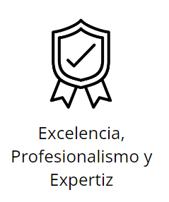

Servicios
Principios



Excelencia, Profesionalismo y Expertiz
Honestidad, Responsabilidad, Rigurosidad y Probidad
Innovación con Base en Ciencia y Tecnología
Alineados con las 3R (Reducir, Reutilizar y Reciclar)
Trabajo en Equipo
Nosotros
Visión
Nuestra visión en Zona Fótica es forjar un camino donde la coexistencia armoniosa entre la acuicultura y el ambiente sea el rumbo. Buscamos ser reconocidos globalmente como líderes en la gestión responsable de centros de engorda, impulsando prácticas innovadoras y sostenibles que beneficien tanto a la industria como a la biodiversidad marina, asegurando un legado positivo para las generaciones futuras.
Misión
En Zona Fótica, nos comprometemos a liderar la protección de los organismos hidrobiológicos en centros de engorda a través de servicios especializados de identificación y cuantificación de microalgas nocivas. Buscamos no solo brindar soluciones precisas y eficientes, sino también promover la sostenibilidad ambiental, velando por el bienestar animal y el equilibrio de los ecosistemas acuáticos.
Banco de Imágenes


×

Colaboradores
Carolina Velazquez-Munzenmayer
Directora Ejecutiva
Linkedin:
Resarch gate:
Juan Jose Rodriguez-Maulen
Director Cientifico
Linkedin:
Resarch gate:
Guido Mancilla
Ingeniero Ambiental
Linkedin:
Resarch gate:
Cristobal Garces
Cientifico de datos
Linkedin:
Resarch gate:
Alejandro Retamal
Doctor en Ciencias Humanas
Linkedin:
Resarch gate:
Patricio Diaz
Lineas de investigación
FAN. Dinámica de biotoxinas.
Linkedin:
Resarch gate:
Contacto
Dirección:
Laboratorio Chinquihue:
Caleta Pesquera # 104
Laboratorio Carretera Austral:
Lenca km 32
Laboratorio Punta Arenas
Patagonia - Chile